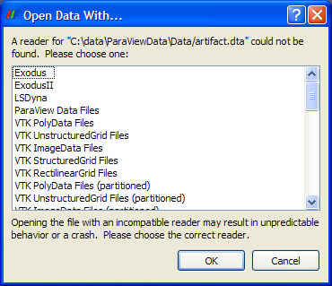
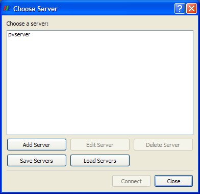
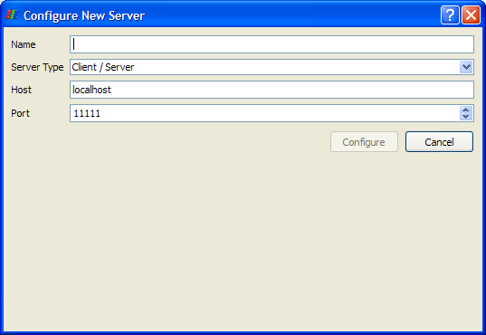
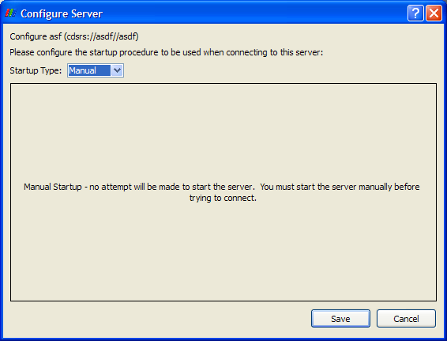
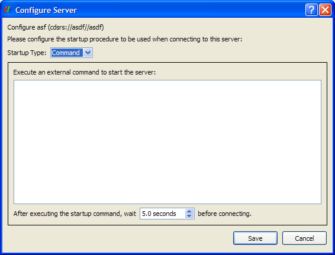
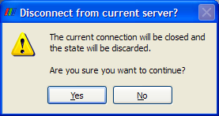

From the File menu, you may load and save various types of files in ParaView. It also allows you to connect to and disconnect from one or more servers and to exit the application.
Selecting Open from the File menu displays a file browser for selecting a file or group of files containing data to load into ParaView. The data files must be located on the server to which ParaView is connected. (When using the builtin server -- the default -- this is the local machine where ParaView is being run.)
If the file extension for the data file being opened is not recognized by ParaView, another dialog box will appear, from which you may select which reader is appropriate for loading your data.

This entry is a sub-menu containing a list of files recently opened in ParaView. The files are grouped according to the server on which they reside. The files in the list include data files and state (.pvsm) files.
Load a .pvsm file to set the ParaView server's state. The state of the user interface is then updated to match that of the server. Such a file may be created by using the Save State entry in the File menu. (See Save State below.)
Capture the state of the ParaView application from the point of view of the server(s). The user interface's state can be re-created from that of the server.
Save to a file the output of the source, reader, or filter selected in the Pipeline Browser. The list of file formats available changes depending on the dataset type. See the list of all available writers.
Save to a file the contents of the selected view (highlighted in red). The formats supported are PNG, BMP, TIFF, PPM, JPG, and PDF. This option is not supported for the Spreadsheet view.
See Saving Animations on the Animation page.
See Saving Animations on the Animation page.
Selecting this option allows you to connect to an external server. This may exist already, or you may launch it by specifying a command in the Configure Server dialog (discussed below) before connecting to it.
If you are already connected to an existing server (including the builtin server -- running only the ParaView client), and you have loaded data or created a data set from the Sources menu, when you click the Connect button, the dialog shown below will appear. Click the "Yes" button to continue with the process of connecting to a server.
Next the Choose Server dialog will appear. This dialog box shows any servers to which you have previously connected (assuming you did not delete the server's entry). If the server you want is already listed in the dialog box, left-click its name to select it, and click the Connect button at the bottom of the dialog box.

If the desired server is not in the list, click the "Add Server" button to add it to the list. The dialog box shown below will appear. Enter a name in the first text entry box; this is the name that will appear in the Choose Server dialog.

Next select the type of connection you wish to establish. The possibilities are as follows. The "reverse connection" entries mean that the server connects to the client instead of the client connecting to the server. This may be necessary when the server is behind a firewall. Servers are usually run with multiple processes and on a machine other than where the client is running.
In either of the client / server modes, you must specify the name or IP address of the host machine (node 0) for the server. You may also enter a port number to use, or you may use the default (11111). If you are running in client / data server / render server mode, you must specify a host machine for the data server and another one for the render server. You will also need two port numbers. The default one for the data server is 11111; the default for the render server is 22221.
When all of these values have been set, click the Configure button at the bottom of the dialog. This will cause the Configure Server dialog box to appear. You must first specify the startup type. The options are Command and Manual. If the server has not already been started outside of the ParaView user interface, select the Command option. To connect to an already-running server, select the Manual option. In this case, there is nothing else to specify, so click the Save button at the bottom of the dialog.

If you use the Command option, in the text window labeled "Execute an external command to start the server", you must give the command(s) and any arguments for starting the server. This includes commands to run the server in parallel (e.g., mpirun). The executable for the server used in client / server mode is pvserver. The ones used in client / data server / render server mode are pvdataserver and pvrenderserver, respectively. You may also specify an amount of time to wait after executing the startup command(s) and before making the connection between the client and the server(s). (See the spin box at the bottom of the dialog.) When you have finished, click the Save button at the bottom of the dialog.

Clicking the Save button will return you to the Choose Server dialog. The server you just configured will now be in the list of servers you may choose. To connect to a server, left-click its name to select it, and click Connect. To make changes to settings for a server, select it, and click Edit Server. To remove a server from the list select it, and click Delete Server.
You may also save and/or load servers to/from a file using the Save Servers and Load Servers buttons, respectively, on the Choose Server dialog. If you choose not to connect to a server, you may click the Close button at the bottom of the Choose Server dialog rather than selecting a server and clicking Connect.
Once the new connection has been formed, the entry at the top of the Pipeline Browser will change to indicate the new server.
When connected to an external server, selecting this option causes ParaView to disconnect from that server. Before actually disconnecting, ParaView displays the dialog box shown below, giving you the chance to verify that you actually wish to disconnect. Disconnecting from all servers causes ParaView to run in Builtin mode (i.e., as a stand-alone application). When you disconnect from a server, the datasets on that server will no longer be available in the ParaView application window.

This functionality is also available on the toolbar.
Choose this option to close the ParaView application.